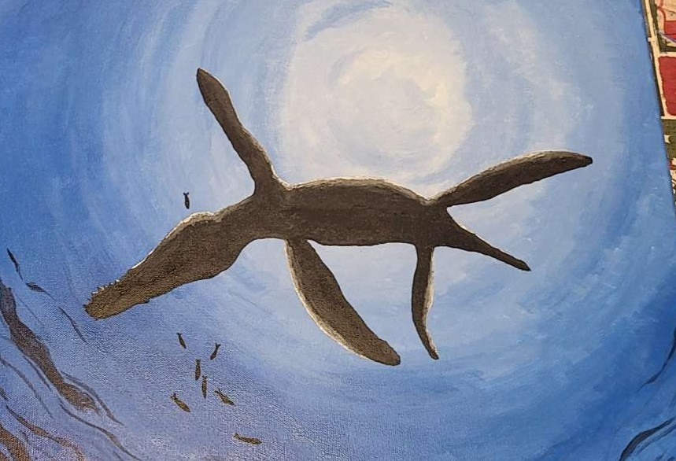
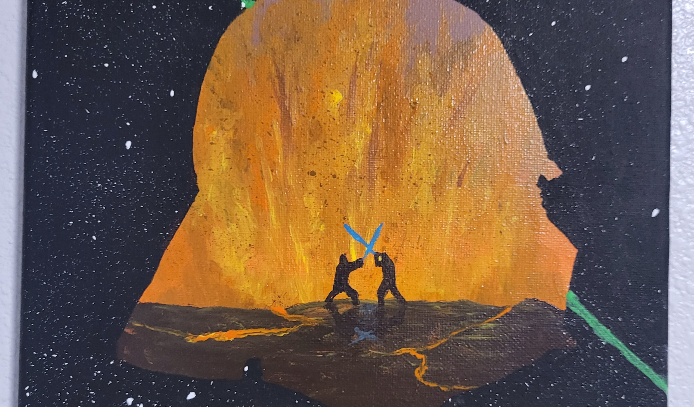
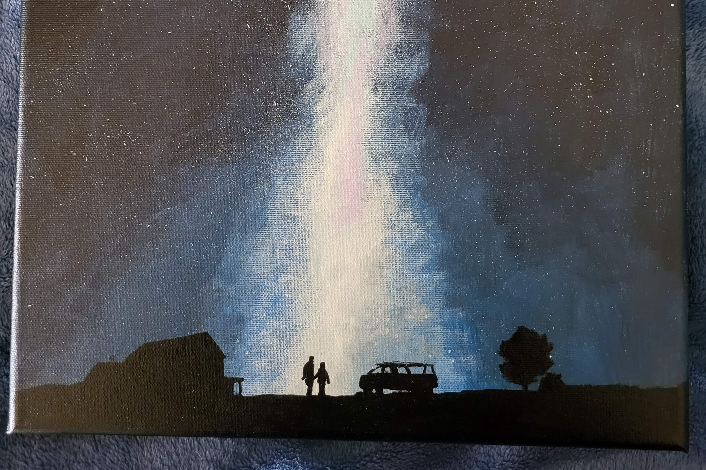
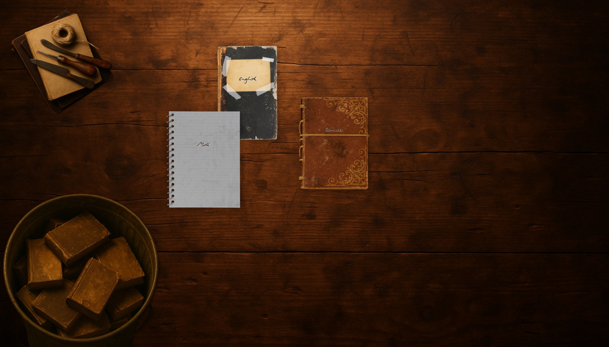
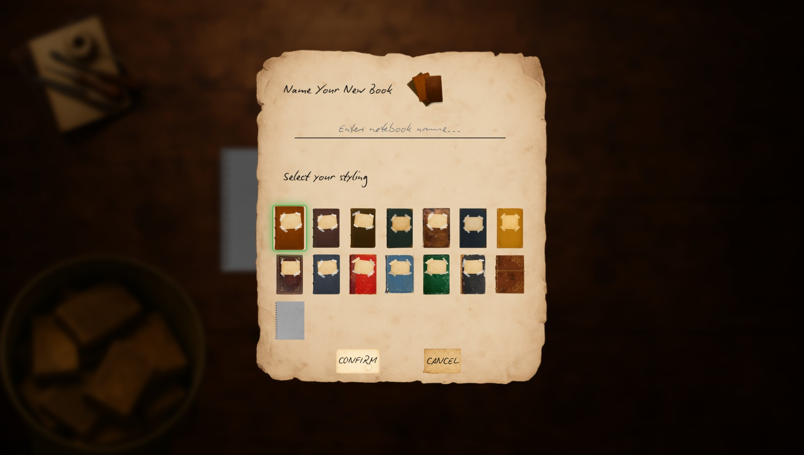
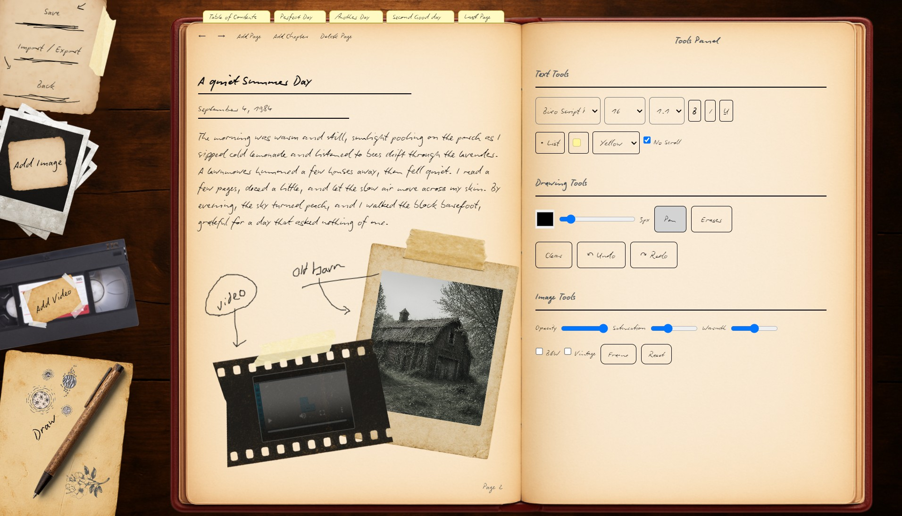

Benjamin Beck
BIOINFORMATICS STUDENT & RESEARCH ENTHUSIAST
University: Utah Valley University
Expected Graduation: Fall 2026
Last Updated: December 17, 2024
Benjamin Beck
About Me
Hi, I'm Benjamin Beck, and I'm from American Fork, Utah. Ever since I was young, I've been passionate about biology—especially evolutionary science. That passion led me to pursue a career in the biological sciences, starting with participation in the STEM science fair during high school. My project focused on the effects of Nicotinamide Riboside (NR) on cell growth and proliferation, for which I received the Reoch Award.
After high school, I began my college journey at Utah Valley University, where I earned my Associate's Degree in 2022. From 2022 to 2023, I served a full-time LDS mission, which was a meaningful and transformative experience. Upon returning, I resumed my education and made the decision to shift my focus from Biology to Bioinformatics, combining my love for science with a growing interest in computers and data analysis.
I'm currently working toward my Bachelor's degree in Biology with a Minor in Computer Science, with the goal of developing innovative research projects that integrate biology and technology. Outside of academics, I enjoy movies, video games, weightlifting, exploring the outdoors, and creating digital and traditional art. I'll be sharing some of my artwork on this site—feel free to check it out!



I also just recently finished a project I have been working on, a new electron app I call Oldly Notebook. It is an interactive, stylish notebook made to be as simple and intuitive as possible. Nobody likes journaling or writing notes in a word doc - hopefully this makes it fun! It is free and available for Windows. The link to the website is under "Projects". Feel free to install and use it!



CC&C is a project I am currently developing to support college students with one of the most time-consuming aspects of campus life—cleaning checks. As students, we juggle demanding coursework, exams, and part-time jobs just to manage the cost of living and tuition. For those living on or near campus, regular cleaning checks are a standard requirement, but finding the time to prepare for them can be a real challenge. CC&C is designed to ease that burden by handling cleaning checks on behalf of students, helping them save time and reduce stress. The project is still in development, and I am continuing to refine it as I balance it with my own college schedule.
In terms of work experience, I spent five years at Carson Meats (now Mosida Market) in Lehi, where I developed a strong work ethic. I now work at Panda Express and plan to continue working there while I complete my degree and build a career in bioinformatics.
Education
Bachelor of Science in Biology
Minor in Computer Science
Associate of Science
High School Diploma
Featured Projects
Research Proposal (Biol 4500)
Developmental Stress and Longevity: Testing the Role of Telomere Attrition in Lifespan Reduction
Final Project (Biol 3100)
Comprehensive biological research project showcasing advanced analytical techniques and scientific methodology.
Oral Microbiome Research (MICR 3455)
In-depth study of oral microbiome composition and its implications for human health.
Minecraft Fossils & Archeology Add-on
Custom modification for Minecraft 1.18.2 that enhances the paleontology and archaeology experience.
Picture Splitter
Digital tool for processing and manipulating image files with advanced splitting capabilities.
Pixelator
Image processing application that converts photos into pixelated art with customizable parameters.
Random Item Generator
Utility tool for generating random items or selections for various applications and research purposes.
Text Encryption
Security-focused application for encrypting and decrypting text using various cryptographic methods.
Oldly Notebook
Interactive Windows application built with electron for a stylish note-taking/journaling experience!
Research Interests
My primary research interests lie at the intersection of biology and computational science. I'm particularly fascinated by evolutionary biology and how we can use modern bioinformatics tools to better understand biological processes. My work focuses on developing innovative approaches that integrate traditional biological research with cutting-edge data analysis techniques.
Through my academic projects and personal research, I aim to contribute to our understanding of complex biological systems while advancing the field of bioinformatics through practical applications and novel methodologies.
Skills & Expertise
Throughout my academic journey and project work, I've developed proficiency in various bioinformatics tools, programming languages, and research methodologies. My experience spans from wet lab techniques to computational analysis, allowing me to approach biological questions from multiple perspectives.
I'm committed to continuous learning and staying current with the latest developments in both biology and technology, ensuring that my research and projects reflect the most current understanding and best practices in the field.
Work Experience
Panda Express – Team Member
Provide excellent customer service, manage orders, and maintain a clean and efficient kitchen environment in a high-paced setting. Gained experience in teamwork, time management, and leadership.
Carson Meats / Mosida Market – Butcher Assistant
Assisted in meat preparation, packaging, and retail operations. Developed strong work ethic, attention to detail, and customer-facing communication skills.